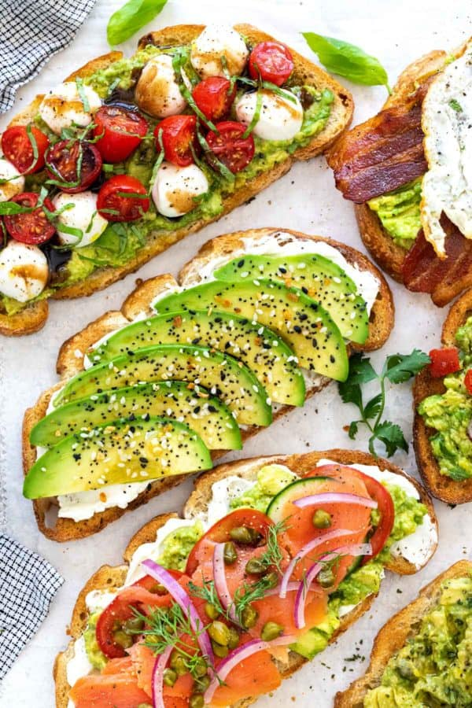

Avocado Toast

Description
The breakfast of millenials. Avocado toast is creamy, crisp and so satisfying. It’s a delicious and simple breakfast, or snack! It’s best consumed immediately, since the avocado browns over time. Recipe as written yields 1 slice of #basic avocado toast; multiply as necessary.
Ingredients
- 1 slice of bread (sourdough is best)
- 1/2 ripe avocado
- Pinch of salt
- Optional: Any extra toppings
Instructions
-
Toast your slice of bread until golden and firm.
-
Remove the pit from your avocado. Cut into thin slices, and scoop out the avocado. Lay the pieces on the toast, and dash a pinch of salt over them (about ⅛ teaspoon) and add more to taste, if desired.
-
Spread avocado on top of your toast. Enjoy as-is or top with any extras offered (I highly recommend a light sprinkle of flaky sea salt, if you have it).
Credit